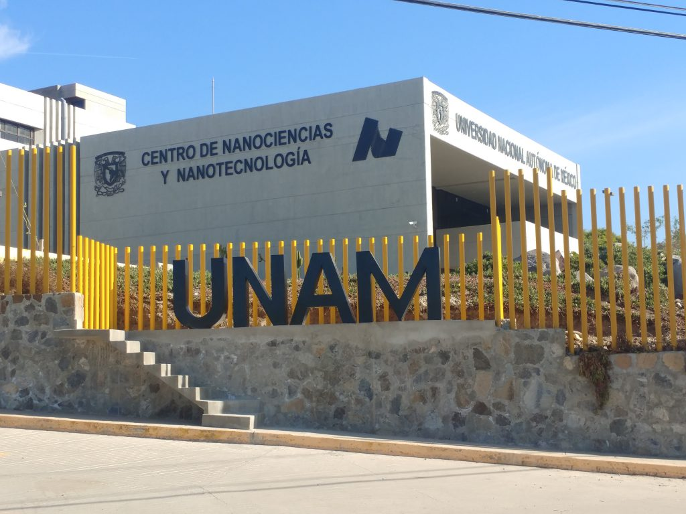

En México los avances tecnológicos siempre han sido más lentos a comparación del resto de países por motivos los cuales no profundizare en este momento, y la biotecnología no es la excepción.
Muchos mexicanos han logrado destacar en el área de la nanotecnología, un ejemplo seria el grupo de investigación de la UNAM y de la UAEM, quienes lograron la síntesis de nanopartículas de oro a partir de un extracto de nopal, lo cual se puede usar para purificar el agua.

Centro de Nanociencias y Nanotecnología de la Universidad Nacional Autónoma de México
En México la nanotecnología se a caracterizado por tener materiales baratos los cuales son obtenidos de extractos de plantas. Los temas más relevantes referentes a la nanotecnología en México consisten en la implementación en materiales adicionados con nanopartículas de oro, plata y oxido de titanio, las cuales mejoran las propiedades de los materiales.
Para que se continúen con los proyectos de investigación, se sigue un “sistema”, en el cual participan estudiantes de doctorado, los cuales realizan un proyecto de investigación durante los últimos semestres de la carrera, así es como heredan los proyectos de investigación y aseguran que se continue con el conocimiento generado.
Literatura Citada:
Flores-Chávez, J. (2022, 31 mayo). Obstáculos para el desarrollo de la nanotecnología en México - Observatorio / Instituto para el Futuro de la Educación. Observatorio / Instituto para el Futuro de la Educación. https://observatorio.tec.mx/edu-bits-blog/obstaculos-para-el-desarrollo-de-la-nanotecnologia-en-mexico/